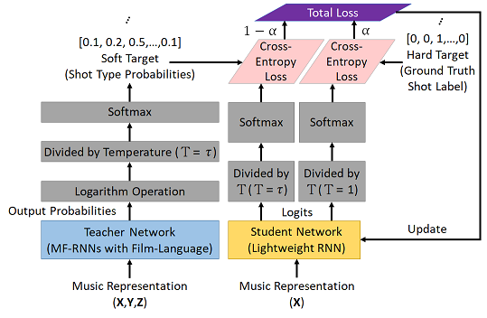
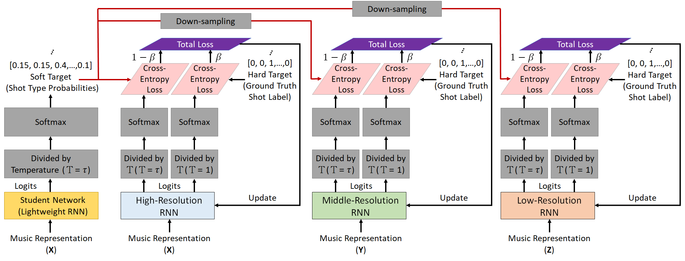

An example of visual storytelling for the song “Supermarket Flowers” by Ed Sheeran live at the BRIT Awards 2018.
The director sequentially uses the XLS, MCU, XLS, and MS to expand the storytelling potential in the beginning of the song.
In the language of film, shot (type) is a fundamental element of visual storytelling [1, 2]. The type of shot is defined as how much a target subject and its surrounding area can be seen. Totally, six types of shots are defined, as described in the following Table.
Besides the six types of shots, the audience shot (ADS) and musical instrument shot (MIS) also considered to enrich the visual storytelling in a concert video.
In this study, we present a deep interactive learning (DIL) mechanism for building a compact yet accurate sequence-to-sequence model to achieve the music to visual storytelling of shots translation.
Different from the one-way transfer between a pre-trained teacher network (or ensemble network) and a student network in knowledge distillation (KD) [3], the proposed DIL mechanism enables collaborative learning between an ensemble teacher network and a student network. Namely, the student network also teaches.
In the proposed DIL mechanism, learning comes from two aspects: teacher-to-student and student-to-teacher.
Regarding
teacher-to-student learning, the process starts with a powerful pre-trained teacher network, MF-RNNs with film-language [4], and then performs knowledge transfer to a student network (lightweight RNN) through KD.

In
student-to-teacher learning, we turn to distill the knowledge (soft target distribution) from the student network and then transfer the knowledge to each of assistant networks (temporal resolution RNNs) integrated in the teacher network, thereby upgrading the teacher network.

Thus, repeating such a DIL mechanism gradually improves the performance of both student and teacher networks.
After training, the student network is finally used to achieve the music to visual storytelling of shots translation.
References
[1] D. Andrews. Communications & Multimedia Technology. Digital Overdrive, 2011.
[2] G. Mercado. The Filmmaker's Eye: Learning (and Breaking) the Rules of Cinematic Composition. Taylor & Francis, 2010.
[3] G. E. Hinton, O. Vinyals, and J. Dean, Distilling the knowledge in a neural network, In NeurIPS Workshop, 2015.
[4] W.-L. Wei, J.-C. Lin, T.-L. Liu, Y.-H. Yang, H.-M. Wang, H.-R. Tyan, and H.-Y. Liao, Seethevoice: Learning from music to visual storytelling of shots, ICME, 2018.
|